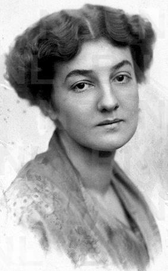

Magda von Hattingberg
Magda Richling, osiem lat młodsza od Rilkego, urodziła się w Wiedniu; ukończywszy studia pod okiem Ferruccia Busoniego, dzięki swym koncertom zdobyła niemały rozgłos jako pianistka. Jej małżeństwo z von Hattingbergiem zakończyło się rozwodem; osamotniona poszukiwała osoby, która pozwoliłaby jej odnaleźć w życiu spełnienie.
Spotkali się listownie w styczniu roku 1914. To Magda, zwana przez Rilkego Benvenutą, wprowadziła poetę w świat muzyki, grając dlań utwory Haendla, Bacha, Scarlattiego.
„On jest dla mnie głosem Boga, nieśmiertelną duszą, Fra Angelico, wszystkim, co nadziemsko Dobre, Wzniosłe, Święte” — pisała Magda do siostry.
Do ostatecznego rozstania doszło z początkiem maja w Wenecji; Magda nie darmo słuchała, jak Rilke często cytował aforyzm Kassnera „Droga od intymności do wielkości prowadzi przez ofiarę”.
Ach, jakże odzierasz me serce z łupin nieszczęścia i trwogi.
Skąd wiesz, że w nędznym owocu ocalało jądro?
Słodki jak gwiazdy, słodki jak świat, ukryty w mym wnętrzu.
Ach, gdy cierpiałem, owładnęło nim senne dojrzewanie,
gdy cierpienie w milczeniu zszarpało me członki
w mym sercu zasnęło serce, to przyszłe, niewinnie.
To jedno serce, spójrz — wciąż nie wiem które, wciąż nie znam
tego domniemanego serca. Do niego należały gwiazdy
ofiarowane tamtemu, co bardziej posępne. Ach, przyjdź po nie
skroś mego zatrwożonego istnienia. Bądź wyrozumiała. Rozpoznaj.
I wołaj. O Zdumiewająca. Wołaj. Okaż mu najpierw
choć blady uśmiech, by się wzruszyło jego promiennym blaskiem;
przychyl mu swe nadobne oblicze — tę przebudzenia przestrzeń,
by w Tobie się zadziwiło, nawykłe do porannego brzasku.
— Rilke Do Benvenuty, III, Wiersze rozproszone z lat 1906-1926